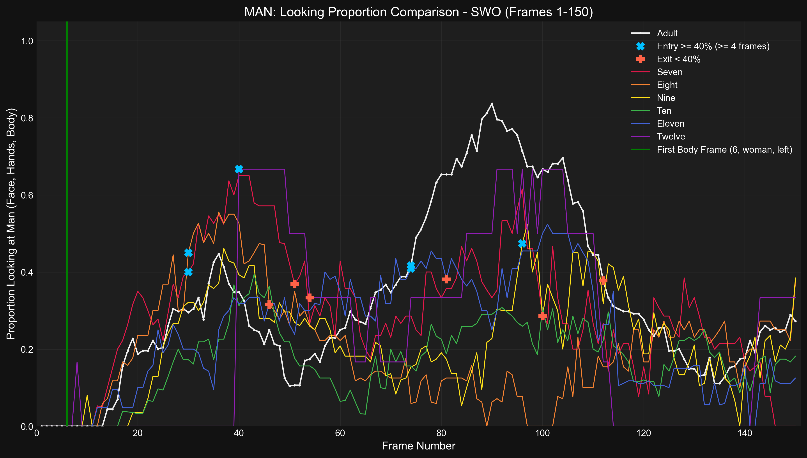
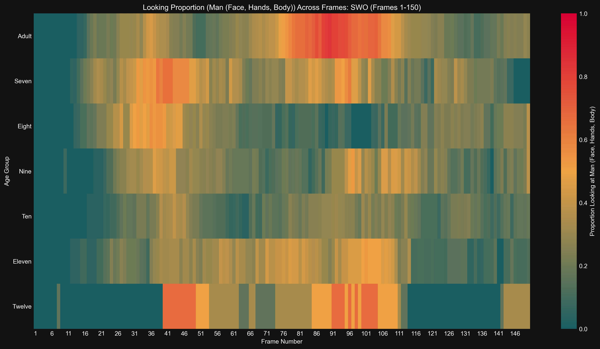

Generated: 2025-04-16 03:52:07
Time series of proportion looking at Man (Face, Hands, Body) for Adult
Results (Adult):- Entry (≥40%, ≤F75): Frame 74- Exit (<40%): Frame 112- Duration (≥40%): 38 frames- Latency (from body frame): 68 frames
Time series of proportion looking at Man (Face, Hands, Body) for Seven
Results (Seven):- Entry (≥40%, ≤F75): Frame 30- Exit (<40%): Frame 54- Duration (≥40%): 24 frames- Latency (from body frame): 24 frames
Time series of proportion looking at Man (Face, Hands, Body) for Eight
Results (Eight):- Entry (≥40%, ≤F75): Frame 30- Exit (<40%): Frame 46- Duration (≥40%): 16 frames- Latency (from body frame): 24 frames
Time series of proportion looking at Man (Face, Hands, Body) for Nine
Results (Nine):- Entry (≥40%): Frame 96 (Occurred after F75, not included in duration/latency calculations)
Time series of proportion looking at Man (Face, Hands, Body) for Ten
Results (Ten):- Entry (≥40%): No sustained entry found.
Time series of proportion looking at Man (Face, Hands, Body) for Eleven
Results (Eleven):- Entry (≥40%, ≤F75): Frame 74- Exit (<40%): Frame 84- Duration (≥40%): 10 frames- Latency (from body frame): 68 frames
Time series of proportion looking at Man (Face, Hands, Body) for Twelve
Results (Twelve):- Entry (≥40%, ≤F75): Frame 40- Exit (<40%): Frame 54- Duration (≥40%): 14 frames- Latency (from body frame): 34 frames
Detailed time series comparing proportion looking at Man (Face, Hands, Body) across age groups.
Bar plot showing latency from body frame to >=40% entry (entry <= F75) looking at Man (Face, Hands, Body) for swo
Results (Latency in Frames, 0 if no valid entry ≤F75): seven: 24, eight: 24, nine: 0, ten: 0, eleven: 68, twelve: 34, adult: 68
Bar plot showing duration >= 40% (entry <= F75) looking at Man (Face, Hands, Body) for swo
Results (Duration in Frames, 0 if no valid entry ≤F75): seven: 24, eight: 16, nine: 0, ten: 0, eleven: 10, twelve: 14, adult: 38
Bar chart comparing mean proportion looking at Man (Face, Hands, Body) across age groups.
Results (Mean Proportion): Seven: 0.293, Eight: 0.198, Nine: 0.217, Ten: 0.170, Eleven: 0.240, Twelve: 0.240, Adult: 0.326
Heatmap showing proportion looking at Man (Face, Hands, Body) across frames and age groups.
